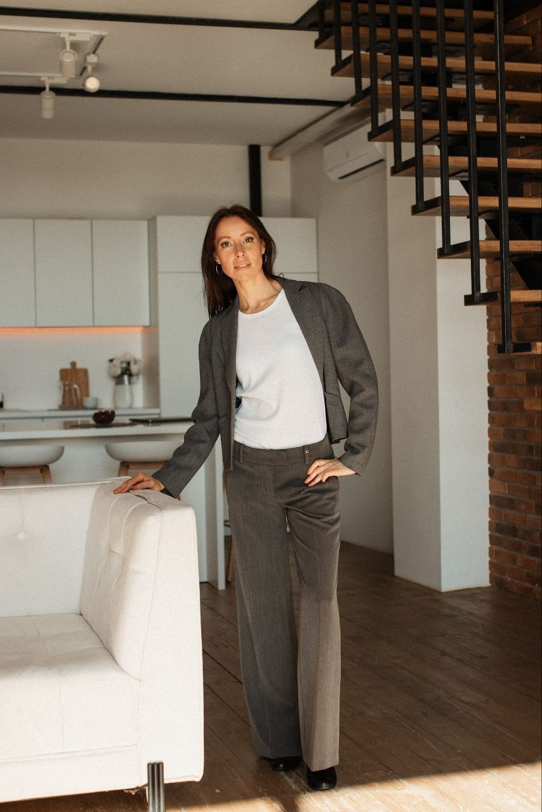
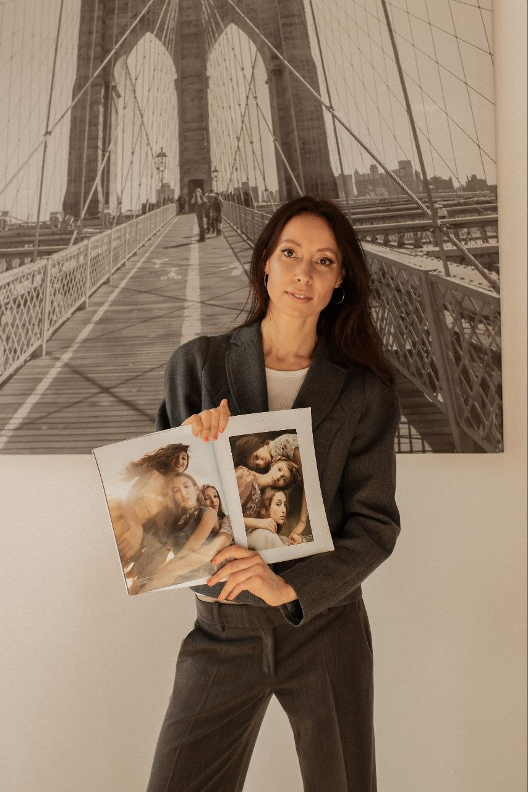

Самопізнання
Глибше пізнання себе й інших та розкриття свого потенціалу.
ПСИХОЛОГИНЯ • ФІЗІОГНОМІСТКА
Фізіогномічний аналіз допомагає побачити сильні сторони, внутрішні конфлікти, потенціал та особливості мислення.

ПРАКТИЧНЕ ЗАСТОСУВАННЯ
Глибше пізнання себе й інших та розкриття свого потенціалу.
Побудова ефективної комунікації та краще розуміння інших людей.
Підвищення власної ефективності та більш успішна професійна реалізація.
ЯК ПРАЦЮЄ МЕТОД
Мій підхід до читання з обличчя поєднує знання з нейрофізіології з давніми аюрведичними знаннями про типи конституції.

Я маю ґрунтовну психологічну університетську освіту (магістр психології), доповнену навчанням в аспірантурі.
Мій підхід до читання з обличчя поєднує знання з нейрофізіології з давніми аюрведичними знаннями про типи конституції.
Фізіогномічний аналіз — це метод пізнання індивідуальних особливостей людини на основі аналізу рис обличчя.
З 2014 року я займаюся практичною фізіогномікою та проводжу фізіогномічні консультації.
Це спосіб дослідити внутрішній, психічний світ людини через індивідуальні риси її обличчя.
ОЗНАЙОМЧА КОНСУЛЬТАЦІЯ
15 хвилин онлайн, щоб познайомитися з методом читання обличчя та отримати перші інсайти про себе.
Хочете познайомитися з методом читання обличчя та побачити, як він працює на практиці? Тоді ця послуга — ідеальний формат для першого знайомства.
За 15 хвилин онлайн-зустрічі ви отримаєте:
Вартість ознайомчої консультації — лише 19€.
Лише одне актуальне фото або селфі:
МОЯ ІСТОРІЯ
Мені завжди здавалося, що природа десь сховала шпаргалку до людської психіки.
Я працювала психологинею в бізнесі, HR, оцінці персоналу та організаційних дослідженнях, і мене переслідувала одна думка:
Невже немає способу швидше зрозуміти, хто перед тобою?
Не півтори години інтерв'ю. Не нескінченні тести. А за кілька хвилин. Так я і «вляпалася» у фізіогноміку.
Спочатку були книжки. Потім очне навчання. Потім ще книжки. Потім ще навчання.
«Не вір. Перевір.»
Саме так постійно нагадував мій внутрішній скептик.
Я досі все перевіряю, порівнюю, аналізую та шукаю нейрофізіологічні пояснення, бо найкраще почуваюся там, де є місце для запитань, сумнівів і досліджень.

Я практикуюча фізіогномістка та психологиня.
З 2014 року я займаюся фізіогномікою та проводжу фізіогномічні консультації.
Я маю ґрунтовну психологічну університетську освіту — магістр психології, доповнену навчанням в аспірантурі.
З 2014 року я займаюся практичною фізіогномікою, після того, як отримала освіту з цього напрямку знань в United Physiognomist Center.
Проводжу індивідуальні консультації з читання обличчя та консультую компанії з підбору й оцінки персоналу.
Я створила окремий курс з психологічних засад фізіогноміки і викладала його як окрему дисципліну в національному університеті.
Також я проводжу тренінги з використання знань фізіогноміки в комунікаціях та сфері послуг.
Зараз я проходжу курс підвищення кваліфікації за спеціальністю «Психологічний аюрведичний коуч» та поглиблюю свої знання в галузі діагностики стану здоров’я за рисами обличчя.
ПОСЛУГИ
ПЕРЕД АНАЛІЗОМ
Для якісного фізіогномічного аналізу потрібні актуальні фото обличчя без фільтрів, ретуші та спотворення пропорцій.
необхідних ракурсів
Для проведення якісного фізіогномічного аналізу необхідно надати актуальні фотографії свого обличчя. Допускаються селфі, за умови, що вони відповідають наведеним нижче вимогам.
Якщо у вас були зміни зовнішності або косметологічні втручання, обов'язково повідомте про це.
Також, будь ласка, вкажіть свій актуальний вік.
Замовити в TelegramПисьмовий звіт на основі твоїх фотографій, у якому ти отримаєш аналіз 5 сильних сторін та 5 зон розвитку. До звіту додається аудіокоментар із поясненнями та рекомендаціями.
Ти отримуєш опис п'яти сильних сторін та п'яти зон розвитку, які характеризують тебе найбільше. В якості бонусу до письмового звіту я додаю короткий уточнюючий аудіозапис, який можна час від часу прослуховувати в якості нагадування.
Для підготовки окремо письмового звіту не потрібна особиста зустріч. Лише відповідні фото, які готуються за інструкцією.
Замовити в TelegramОнлайн- або особиста зустріч тривалістю годину.
Крок за кроком я розкриваю твої вроджені особливості (твої природні якості) та риси характеру, сформовані життєвим досвідом (твої набуті якості).
Ця захоплююча подорож вглиб себе дозволяє побачити твої сильні сторони та зони розвитку, відслідкувати твої шаблони емоційних реакцій та поведінки, виявити внутрішні конфлікти, дати усвідомлений аналіз індивідуальним виграшним та програшним сценаріям проживання тих або інших якостей.
Які відповіді ти знайдеш:
Даний аналіз обличчя я підкріплюю відповідними, індивідуально підібраними для тебе рекомендаціями, які допоможуть проживати твої якості в плюсі і надихати тебе на шляху твого саморозвитку.
Акція: при замовленні цієї послуги до 1 вересня 2026 року діє знижка 30%. Це 175 євро замість стандартних 250 євро.
Замовити в TelegramОнлайн- або особиста зустріч тривалістю 1,5 години.
Дана послуга читання обличчя – це багаторівневий аналіз не лише провідних рис особистості й характеру, але й функціонального стану організму на основі древнього аюрведичного знання про зв'язок тіла і психіки та уявлень про обличчя як карту проекцій внутрішніх органів.
Такий аналіз НЕ Є медичною діагностикою, але допомагає вчасно помітити сигнали дисбалансу організму і звернути увагу на аспекти здоров'я, які можуть потребувати підтримки або додаткового обстеження.
Психопортрет:
Енергетика та функціональний стан організму:
Даний аналіз обличчя я підкріплюю індивідуальними рекомендаціями щодо балансування твого типу конституції, простими щоденними ритуалами для відновлення енергії та домашніми аюрведичними рецептами для життєвого тонусу.
За запитом до усної фізіогномічної консультації додаються письмові матеріали в електронному форматі.
Замовити в TelegramФізіогномічний аналіз сумісності у стосунках. Онлайн- або особиста зустріч тривалістю близько 1 години.
Консультація допоможе краще зрозуміти перебіг ваших стосунків, причини непорозумінь та сильні сторони вашої взаємодії. І дасть можливість побачити, як будувати більш гармонійну комунікацію у парі.
Підходить для партнерів та подружжя, людей на етапі знайомства, а також бізнес-партнерів.
Які відповіді ти знайдеш:
Фізіогномічний аналіз кандидата, співробітника або бізнес-партнера – додатковий консультативний інструмент для прийняття більш зважених та обґрунтованих кадрових і бізнес-рішень.
Для кого ця послуга буде особливо актуальною: HR-відділи, власники бізнесу, керівники команд, рекрутингові агенції.
Різновиди послуги:
Вартість послуги: 150 євро/особа; підлягає обговоренню залежно від кількості тих, хто бере участь в фізіогномічному аналізі.
Замовити в TelegramТехніки квантової фізіогноміки для гармонізації рис обличчя. Онлайн- або особиста зустріч тривалістю близько 1 години.
У квантовій фізіогноміці я працюю не з обличчям напряму, а з внутрішньою реальністю людини, яка відображається на обличчі.
В процесі аналізу рис обличчя ми виявляємо психологічні якості, внутрішні стани та переконання, які впливають на формування зовнішності. Їх усвідомлення та корекція сприяють позитивним змінам у зовнішньому вигляді.
Консультація допомагає, якщо ти:
Крім усвідомлення особистісних та характерологічних рис, які відображає твоє обличчя, ти отримуєш:
РЕЗУЛЬТАТ КОНСУЛЬТАЦІЇ
Крок за кроком я розкриваю твої вроджені особливості та риси характеру, сформовані життєвим досвідом.
Провідні індивідуальні якості та особливості поведінки.
Особливості прийняття рішень та аналізу ситуацій.
Як ти вибудовуєш взаємодію з людьми.
Що тебе рухає вперед та дає відчуття сенсу.
Вразливі місця та можливості для особистісного росту.
Що виснажує та що допомагає відновлювати ресурс.
Можливі сфери реалізації та сильні сторони особистості.
Схильність до стресу, перевантаження та труднощів взаємодії.
ДЛЯ БІЗНЕСУ
Фізіогномічний аналіз кандидата, співробітника або бізнес-партнера – додатковий консультативний інструмент для прийняття більш зважених та обґрунтованих кадрових і бізнес-рішень.
НАВЧАННЯ
Курс навчить бачити те, що часто залишається поза словами: як людина мислить, реагує, спілкується, приймає рішення та чого можна очікувати від взаємодії з нею.
Онлайн, офлайн, індивідуальне навчання, групові майстер-класи та корпоративні тренінги.
Допомагає швидше орієнтуватися в особливостях людини та будувати ефективнішу комунікацію.
Курс складається з трьох послідовних рівнів, кожен із яких включає п'ять тематичних модулів.
Курс доступний в онлайн- та офлайн-форматі. Можливе індивідуальне навчання, групові майстер-класи та корпоративні тренінги.
Фізіогноміка — це практичний інструмент швидкого розуміння особистості за рисами обличчя.
Навчальний курс дозволить:
Курс складається з трьох послідовних рівнів, кожен із яких включає п'ять тематичних модулів.
Замовити навчанняБІЛЬШЕ ІНФОРМАЦІЇ
Ти зможеш краще зрозуміти сильні сторони та вразливі місця, особистісний потенціал, стиль мислення, емоційні реакції, манеру спілкування, мотивацію та приховані внутрішні конфлікти.
Так. Я пропоную face-to-face та онлайн-консультації.
Такий аналіз НЕ Є медичною діагностикою, але допомагає вчасно помітити сигнали дисбалансу організму і звернути увагу на аспекти здоров'я, які можуть потребувати підтримки або додаткового обстеження.
Для підготовки письмового звіту не потрібна особиста зустріч. Лише відповідні фото, які готуються за інструкцією.
Так. Фізіогномічний аналіз кандидата, співробітника або бізнес-партнера може бути додатковим консультативним інструментом для кадрових і бізнес-рішень.
Для виконання фізіогномічного аналізу потрібні відповідні фото, які готуються за інструкцією.
Аналіз обличчя підкріплюється індивідуально підібраними рекомендаціями, які допоможуть проживати твої якості в плюсі та підтримувати саморозвиток.
Розгорнута консультація — це багаторівневий аналіз не лише рис особистості й характеру, але й функціонального стану організму на основі аюрведичного знання.
За запитом до усної фізіогномічної консультації додаються письмові матеріали в електронному форматі, щоб у будь-який момент повернутися до важливих моментів.
Так. Практичний курс фізіогноміки доступний в онлайн- та офлайн-форматі. Можливе індивідуальне навчання, групові майстер-класи та корпоративні тренінги.
ПРАЙС ПОСЛУГ
Залиште свої контакти і я надішлю актуальний перелік консультацій, програм та форматів співпраці.
ВІДГУКИ
Фізіогномічні консультації
Якщо ви хочете краще зрозуміти себе, свої сильні сторони, внутрішні сценарії та прихований потенціал — я допоможу побачити це через аналіз рис обличчя.

КОНТАКТИ